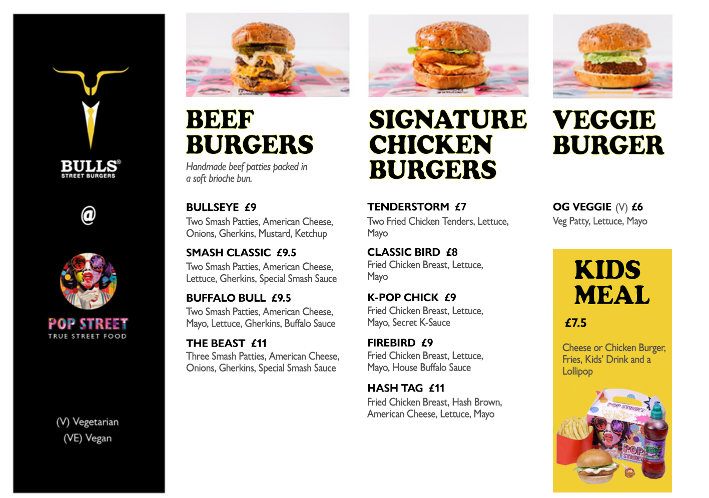

Web Development
Responsive websites, front-end development, WordPress and web-based systems.
Explore a collection of my work across web development, graphic design, branding, multimedia, photography and AI-assisted creativity. Each project reflects my approach to solving design and technical challenges through thoughtful, user-focused solutions.
Responsive websites, front-end development, WordPress and web-based systems.
Brand visuals, menu design, social media assets and print-ready layouts.
Video editing, motion graphics, colour grading and social content.
Mobile photography, image editing and visual storytelling.
Concept development, image generation, art direction and refinement.
Logo systems, campaign visuals and consistent brand presentation.

TilByte is a restaurant POS project created to support phone orders, customer records, order management, kitchen printing and payment workflows through a clear and practical interface.
View Case StudyUse the filters to explore different areas of my work.
Restaurant ordering, customer management and till workflow system.
View Case Study
High-impact restaurant menu design created for Birmingham food brands.
View Project.JPEG)
A responsive hospitality website concept with a polished visual style.
View Project
Cinematic colour grading and post-production for interior footage.
View Project.PNG)
A collection focused on mood, light, detail and visual storytelling.
View Collection.png)
Concept visuals developed through prompting, direction and refinement.
View CollectionNo projects are available in this category yet.
I’m available for selected web, design and multimedia projects.